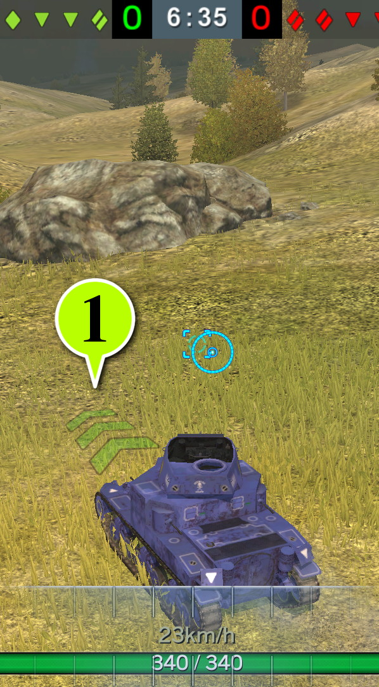

Drive Arrow Transparent 50%
Creator
Name: WoTB_MW(通りすがりの戦車長)
Twitter:
@WoTB_MW
Blog:
WoT Blitz Mod Works
Mod Information
ID: 3d.drive_arrow.transparent50
Description: Change the transparency of drive arrow into 50%.
